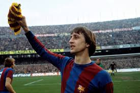

Leyendas del Fútbol Español
Los jugadores que han marcado la historia
Alfredo Di Stéfano
Real Madrid (1953-1964)

Johan Cruyff
Barcelona (1973-1978)
Telmo Zarra
Athletic Club (1940-1955)
Cristiano Ronaldo
Real Madrid (2009-2018)

Lionel Messi
Barcelona (2004-2021)
Isco
Málaga (2011-2013)
Rachas Goleadoras
| Jugador | Cantidad Jornadas | Goles |
|---|---|---|
| Luis Suarez(Barcelona) | 7 | 10 |
| Lucas Pérez(Deportivo) | 7 | 7 |
| Borja Bastón(Eibar) | 6 | 8 |
| Miku(Rayo Vallecano) | 5 | 5 |